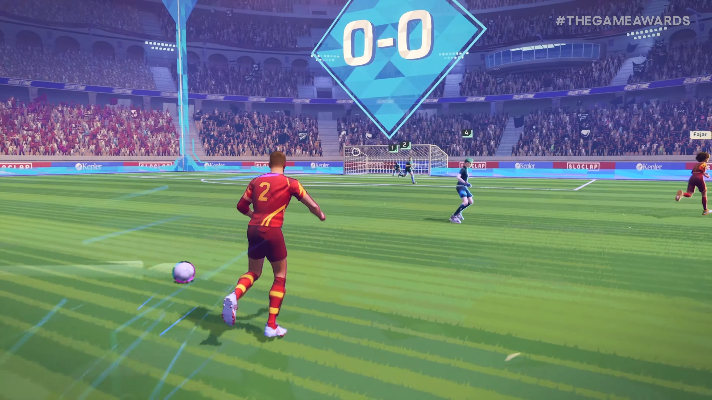

Автор: Дэн Аморосо
Rematch – это предстоящая спортивная игра от студии, создавшей Sifu и Absolver, два из самых глубоких и динамичных файтингов последних лет. На этот раз разработчик инди-игр Sloclap принял смелое и несколько неожиданное решение перейти в совершенно другой жанр. Хотя на первый взгляд переход от ориентированных на бои проектов к футбольной игре кажется совершенно иным направлением, между ними гораздо больше сходств, чем кажется на первый взгляд.
Game Rant поговорил с креативным директором Sloclap, Пьером Тарно, обо всем, что касается Rematch. Он рассказал о некоторых концепциях из предыдущих игр разработчика, которые помогли сформировать игровой процесс Rematch. Это интервью было отредактировано для ясности и краткости.
Почему Sloclap перешла от файтингов к футболу
В: Учитывая, что Sifu и Absolver были ориентированы на битвы, что вдохновило вас переключиться на футбол?
О: Есть сходства. Это все игры о телах в движении, с акцентом на точный и быстрый контроль персонажа. Дело не столько в том, что мы хотели отойти от боев, сколько в том, что нас двигало творческое желание исследовать красоту футбола. Мы хотели создать инновационный опыт, который позволил бы игрокам почувствовать волнение от идеальной передачи или красивого удара с лета, и все это с захватывающей перспективы. Это казалось нам естественной эволюцией.
В: Как ваш опыт работы над предыдущими играми помог сделать Rematch лучше?
О: Наша работа над Sifu и Absolver дала ценную информацию об ощущении игры, отзывчивости и точности, а также о передаче физики и воздействия с помощью сложных систем анимации. В частности, Absolver, как онлайн-игра, построенная на основе справедливой репликации игрового процесса, оказала непосредственное влияние на решения, которые мы принимали в отношении онлайн-технологий Rematch. Этот опыт оказался решающим в разработке Rematch, проекта, который оказался сложным как с технической, так и с дизайнерской точек зрения.
В: Анимация и движения очень плавные, как в Sifu и Absolver. Было ли это приоритетом?
О: Безусловно. Мы любим экшн-игры с плавной анимацией и отзывчивым геймплеем с частотой 60 кадров в секунду. Это действительно часть ДНК нашей студии. Такой подход естественным образом перешел и в Rematch.

В: Чего, по вашему мнению, не хватает в других футбольных играх?
О: Большинство футбольных игр ориентированы на одиночный или 1v1 опыт, в то время как мы хотели сосредоточиться на командной механике и тактическом взаимодействии внутри команды. Кроме того, в других футбольных играх вид сверху; им не хватает реального ощущения погружения на поле.
Наконец, сохраняя геймплей доступным и придавая ему аркадное ощущение, мы хотим предоставить опыт, в который, прежде всего, весело и приятно играть!
В: Брали ли вы какое-нибудь вдохновение из мини-футбольных лиг?
О: И да, и нет. Хотя формат 5v5 в Rematch напоминает мини-футбол, размер поля фактически ближе к традиционной игре. Нашим основным вдохновением остается ассоциативный футбол.
Сравнение Rematch с Rocket League
В: Многие проводили параллели между подходом Rematch к футболу и Rocket League. Как вы относитесь к этим сравнениям? Брали ли вы какое-нибудь вдохновение из Rocket League?
О: Трудно точно определить конкретные источники вдохновения – при создании игры в 2025 году вы стоите на плечах гигантов. Мы любим Rocket League, и есть сходства, например, то, что игра происходит в клетке, но Rematch сильно отличается своей механикой и тактическим геймплеем.
В: Считаете ли вы Rematch казуальным опытом или надеетесь, что она будет способствовать развитию соревновательной сцены?
О: И то, и другое. Хотя она разработана как казуальный и социальный опыт, в Rematch также достаточно глубины и челленджовости* для соревновательной игры. Внутри компании мы уже видели, насколько конкурентоспособной становится наша команда во время турниров!
В оригинале использовалось слово challenge, так-что я использовал более подходящее слово, чем просто сложность. Определения:
Челлендж - любая задача, которую игра предлагает выполнить, и в процессе выполнения которой игрок может ошибиться.
Челленджовость - метрика, которая характеризуется количеством уникальных челленджей.
Подробнее, я так-же обсуждал и дополнял это определение в данном
видео))
В: Как вы надеетесь привнести разнообразие в каждый матч Rematch?
О: Как и сам футбол, на первый взгляд каждый матч всегда одинаков, но в то же время он всегда разный. Тактические конфигурации, непредсказуемые моменты и динамичный геймплей обеспечивают большое разнообразие. Невозможно предсказать, что произойдет даже через несколько секунд.
Как Rematch обеспечивает, чтобы вратарь был таким же интересным, как и другие позиции
В: Если один игрок управляет вратарем, как вы обеспечиваете, чтобы он был так же вовлечен, как и другие игроки?
О: Это было одним из главных направлений на протяжении всей разработки. У вратаря есть уникальные механики, которые делают эту позицию действительно интересной. Когда команда защищается, вратарь действительно является последней линией обороны, и это захватывающе находиться в этой роли. Кроме того, когда вратарь покидает штрафную площадку, он становится "чистильщиком" и получает определенные бонусы, связанные с выносливостью.
Это позволяет вратарям продвигаться вперед, когда их команда находится в атаке, и, по сути, брать на себя роль полузащитника – участвовать в командной тактике, перехватывать мячи и при этом иметь возможность быстро вернуться в штрафную площадку, если команда соперника контратакует. Кроме того, у вратаря всегда отличный обзор действий, что делает его естественным выбором для помощи в координации командной тактики с помощью голосового чата или других средств связи. Мы регулярно приглашаем внешних тестировщиков, и многие игроки говорят нам, что вратарь – их любимая позиция для игры.
В: Как назначаются позиции в Rematch?
О: Нет фиксированных позиций. Игроки динамически чередуются в зависимости от развивающейся ситуации. Например, другой игрок может занять место вратаря, войдя в штрафную площадку, в то время как первоначальный вратарь играет в поле в качестве чистильщика.
Как разработчики Rematch остановились на 5v5
В: Как вы остановились на 5v5? Есть ли возможности для матчей с меньшим количеством игроков?
О: Мы представляли 5v5 как основной режим, потому что он обеспечивает отличный баланс – удерживает игроков вовлеченными, обеспечивая тактическую глубину, например, поиск открытий и обработку давления со стороны противников. Тем не менее, игра по-прежнему очень веселая с меньшим количеством игроков, и хотя 5v5 будет единственным соревновательным режимом на старте, матчи в быстром режиме с меньшим количеством игроков также будут доступны.
В: Rematch, похоже, сочетает в себе реализм и экстраординарные элементы. Будут ли способы изменить опыт, чтобы сделать его более или менее реалистичным?
О: Важно отметить, что в Rematch нет никаких фэнтезийных элементов – мы стремимся к опыту, который ощущается как правдоподобным, так и эпичным. Существует ключевое различие между правдоподобием и реализмом: мы не пытаемся создать реалистичный футбольный симулятор. Вместо этого наш выбор обусловлен ощущением игры и глубиной механики. Одним из основных столпов разработки было заставить игроков "чувствовать себя потрясающими спортсменами".
Rematch и партнерство со спортсменами
В: Планируете ли вы использовать какие-либо бренды футбольных или FIFA в Rematch? Спортсменов на обложке или нынешних футбольных звезд, связанных с игрой?
О: Мы не планируем использовать официальные бренды клубов или лиг, но мы открыты для сотрудничества с отличными игроками, которые соответствуют видению игры. Стоит отметить, что, хотя Rematch понравится футбольным фанатам, вам не обязательно быть одним из них, чтобы получить удовольствие. В нашей команде несколько разработчиков не являются ярыми футбольными фанатами, но они все равно любят играть в Rematch!
В: Что вас больше всего радует в том, что игроки получат, когда получат Rematch в свои руки?
О: В своей основе Rematch – это радость игры в футбол с друзьями. Нам не терпится увидеть, как игроки объединяются в команды и весело проводят время вместе. Удар с лета – одно из ключевых действий, которое действительно продвигает видение игры. Он воплощает столпы опыта: он ощущается потрясающе, выглядит великолепно, усиливает экшн, оказывая давление на команду соперника, и является коллективной игрой. Удар с лета используется не только для забивания голов – он часто используется для быстрой передачи мяча товарищам по команде.
Мы особенно рады увидеть, как игроки делают свою первую результативную передачу: отдают идеальный пас другу, который затем забивает мяч прямо в сетку плавным ударом с лета. Это командная последовательность крутых действий, которую невероятно приятно выполнить.
Оригинал
{kind=link}
{kind=link}
{kind=link}
{kind=link}